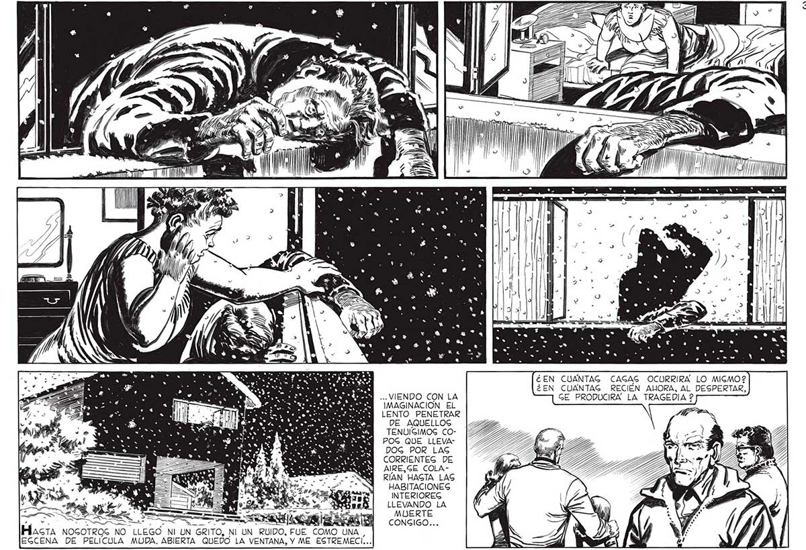

A ¿EN CUANTAG CAGAG OCURRIRA LO MIGMO? : ¿EN CUANTAG RECIÉN ALORA, AL DESPERTAR, SÍ ...VIENDO CON LA GE PRODUCIRA LA TRAGEDIA 2 ES IMAGINACIÓN EL LENTO PENETRAR DE AQUELLOS TENUÍGIMOG COPOG QUE LLEVADOG POR LAS CORRIENTEG DE AIRE,GE COLARÍAN HAGTA LAS HABITACIONES INTERIOREG LLEVANDO LA MUERTE CONGIGO...
